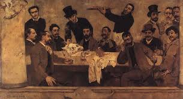
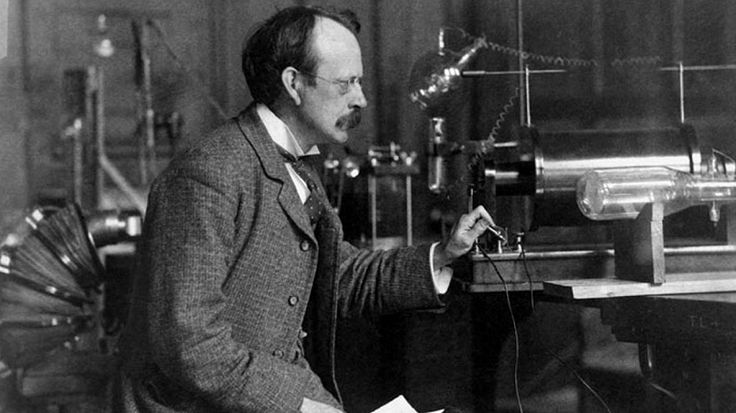
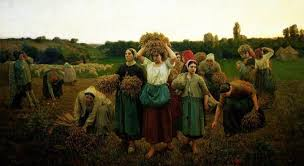
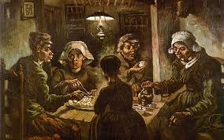

O Naturalismo foi um movimento literário que surgiu na Europa no final do século XIX. Procurava retratar a vida com precisão científica e muitas vezes desapaixonada. Ele surgiu como uma evolução do Realismo e teve grande influência de avanços científicos, como as teorias de Charles Darwin, o Positivismo e o Marxismo. A época foi marcada pela busca pelo conhecimento empírico.
O naturalismo brasileiro surgiu em meio a agitação política e social promovida pela crise do Segundo Reinado.
Avanços cientificos e novas descobertas no campo da física e química
Segunda Revolução industrial; urbanização e industrialização
Transformações econômicas, politicas sociais e culturais.
O marco principal do Naturalismo foi a publicação do livro “A origem das espécies”, de Charles Darwin, o livro provocou polêmica, pois contrariava o pensamento criacionista.

Investigação das ciências naturais, apresentava um ponto de vista as piores situações da sociedade. Muitas das obras abordavam questões sociais e patológicas, fazendo uma análise psicológica mais detalhada do que no realismo.
Cientificismo
Escrita detalhada
Objetividade
Sexo e sensualidade presente nos temas
Influência do determinismo e Darwinismo (o homem é fruto do meio, da raça e do momento); forte análise social
Critica social a mizéria e a urbanização desorganizada
Grupos humanos marginalizados; valorização do coletivo
Manifestação dos instintos naturais, em detrimento da moral da classe dominante
Representação da homossexualidade
Zoomorfização (comparar personagens a animais quando se deixam guiar pelos instintos

O romance de tese naturalista é uma obra literária que apresenta um ponto de vista e tenta demonstrá-lo através de fatos narrados (fatos narrados são acontecimentos que são contados, relatados ou proferidos por um narrador.).

A expressão surgiu na Europa e foi utilizada inicialmente pelo escritor francês Émile Zola. Ao expor o marco inicial da nova escola literária para o mundo
A França foi o berço do Naturalismo literário, e Émile Zola é o nome mais associado ao movimento. Suas obras, como "Germinal" e "Thérèse Raquin", exploram as condições sociais e biológicas que influenciam o comportamento humano. Com a literatura, Zola deu o ponta pé inicial para que mais escritores pudessem estudar e expor as facetas mais primárias e animalescas da sociedade, a fim de provar teorias filosóficas e sociais da época.
Em Portugal, José Maria de Eça de Queirós foi o principal expoente do Naturalismo. Seu romance "O Primo Basílio" critica a hipocrisia da sociedade portuguesa, enquanto "Os Maias" é uma saga familiar que examina a decadência de uma família aristocrática.